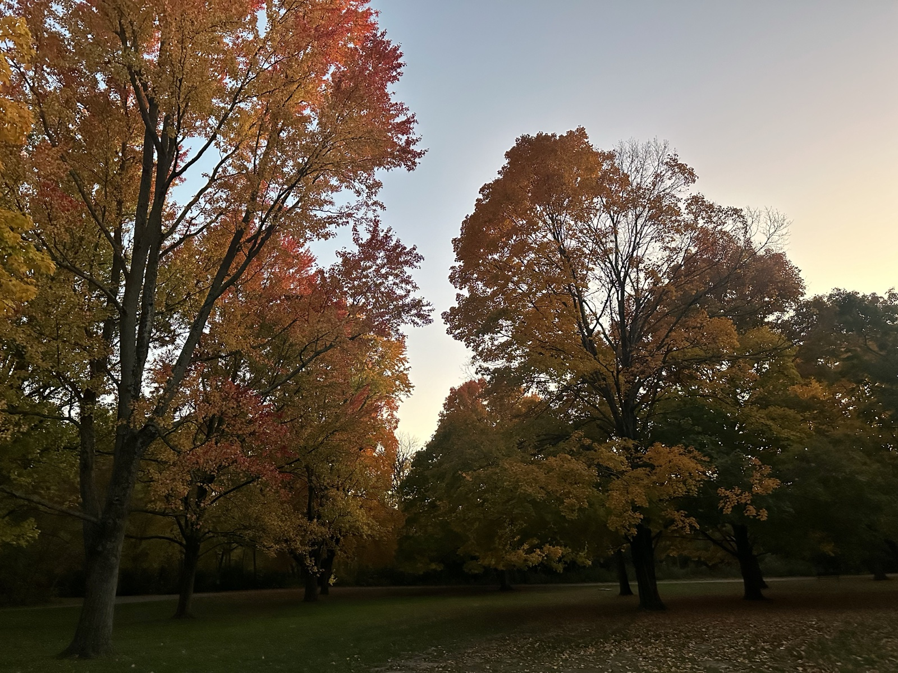
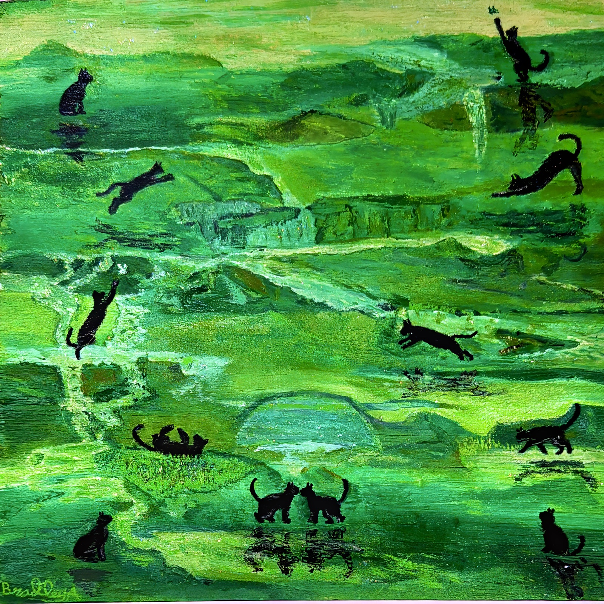
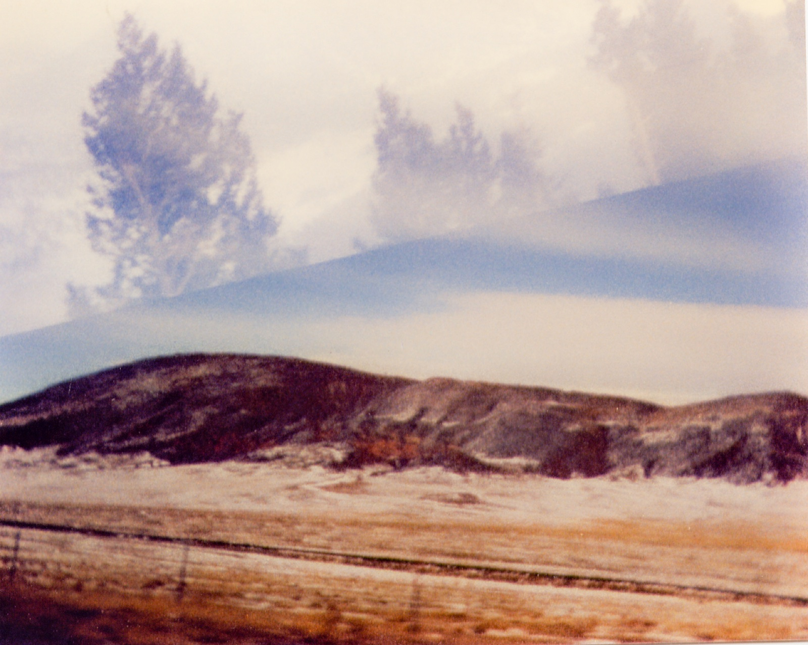
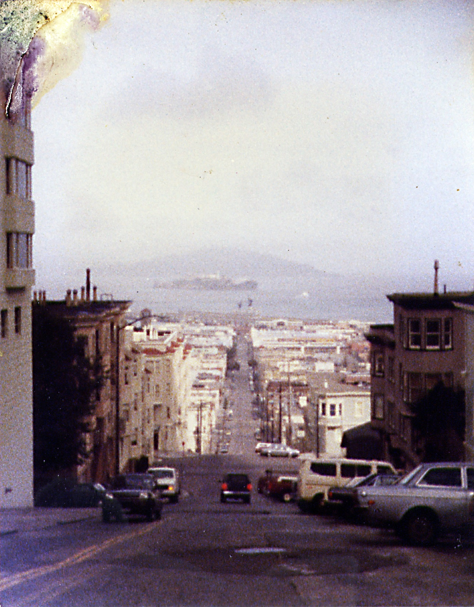
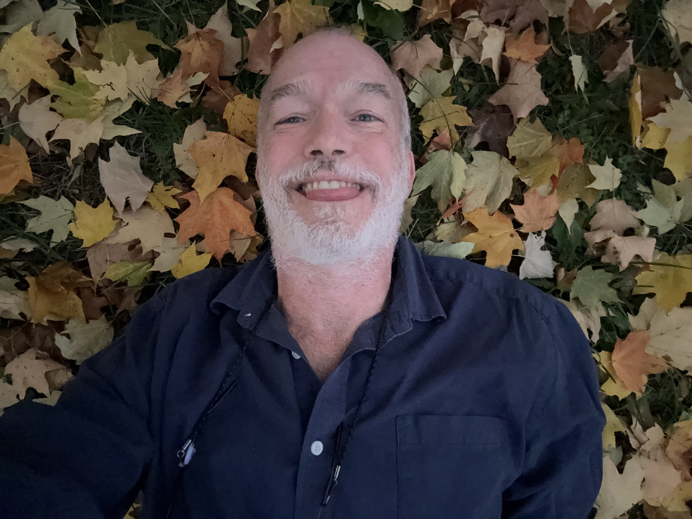

People & Encounters
Memories of people, friendships, and encounters that have remained with me.
An Ongoing Conversation About Being Human
Exploring the world through color, memory, imagination, and observation.
Writing is one way of exploring the experience of being human. Art and photography offer others.
Sometimes an experience can be expressed through words. Sometimes it is better expressed through color, light, shape, or silence.
The collections gathered here reflect different periods of my life, different places, and different ways of seeing and experiencing the world.

This part of the website is still taking shape. Over time, I will be adding writings, images, memories, and reflections. You are welcome to explore what is here and return as the conversation continues.
A few invitations to look more closely.

Revisiting memories through paint.
My experiences in Cameroon remain among the most memorable experiences of my life.
Decades later, I have begun revisiting some of those memories through painting. The people, forests, animals, and encounters that once surrounded me have become subjects of visual exploration.
These paintings are not simply attempts to reproduce what I saw. They are also explorations of what I remember and what those experiences have come to mean to me.
Memories of people, friendships, and encounters that have remained with me.
Forest paths, streams, trees, light, and the living energy of the rainforest.
Animals and encounters with the extraordinary diversity of life.
Exploring simplicity, color, and form.
Sometimes a simple shape against a field of color can express something surprisingly rich.
These works explore the relationships between light and darkness, movement and stillness, detail and simplicity.
Warm colors, open spaces, silhouettes, and desert light.
Water, sailboats, birds, horizons, and changing light.
Movement, personality, curiosity, and the simple forms of living beings.
When words become images.
Stories and illustrations offer different ways of entering imagined worlds.
This collection will bring together visual interpretations of characters, scenes, ideas, and themes from my literary works.
Illustrations exploring wonder, encounter, recognition, and the worlds of the stories.
Explore the CollectionIllustrated explorations of recovery, discovery, and learning to live.
When Joy Says BeginCharacters, imaginary worlds, philosophical ideas, and visual storytelling.
Moments preserved across time and place.
Photographs preserve moments that might otherwise gradually disappear from memory.
Looking at photographs from different periods of my life often becomes an opportunity to revisit experiences, people, and earlier ways of seeing.


Peace Corps experiences, people, communities, landscapes, and everyday life.
Years of living, working, traveling, and encountering life in Southeast Asia.
Memories of people, places, teaching, and life in Sudan.
Photographic memories from travels and experiences in other parts of the world.
Trees, flowers, animals, skies, water, and the changing natural world.
Small moments that invite us to notice what we might otherwise overlook.
Discovering wonder in ordinary things.
Not every meaningful experience requires traveling somewhere distant or encountering something extraordinary.
Sometimes it is enough to notice the living beings, changing seasons, and small moments that surround us.

Two cats, two personalities, and many moments of curiosity, companionship, and discovery.
Observations of growth, change, color, and the quiet persistence of life.
Small discoveries and unexpected moments of beauty in everyday life.
Discovering through the act of creating.
A finished painting reveals only part of its story.
Behind it are ideas, experiments, mistakes, discoveries, revisions, and moments of uncertainty.
This section will explore some of those processes, including the development of paintings from their earliest ideas to their finished forms.
Transforming remembered experiences into visual works.
Exploring composition, perspective, color, and form.
Paintings and creative projects that are still developing.
Many of these visual works are connected to experiences and ideas explored elsewhere in my writing.
A painting may begin with a memory. A memory may become a story. A story may become an illustration. Each offers another way of exploring the same experience.
There are many ways of looking at the world and many ways of responding to what we see.
This gallery will continue to grow as new works are created, earlier memories are revisited, and new ways of seeing emerge.